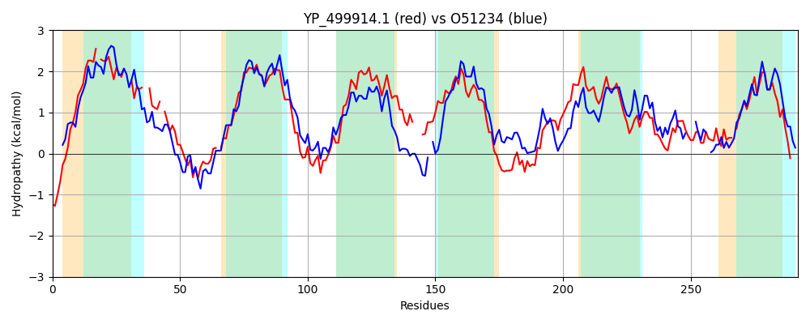

Hit Accession: O51234
Hit TCID: 3.A.1.7.5
Hit Description: gnl|BL_ORD_ID|7290 gnl|TC-DB|O51234|3.A.1.7.5 Phosphate ABC transporter, permease protein PstC OS=Borrelia burgdorferi (strain ATCC 35210 / B31 / CIP 102532 / DSM 4680) GN=pstC PE=3 SV=1
Mach Len: 292
e:0.000000
Query TMS Count : 6
Hit TMS Count: 6
TMS-Overlap Score: 4.800000
Predicted Substrates:CHEBI:7793;phosphate(3-)
BLAST Alignment:
Score: 421 , Bit scores: 166 bits, E-value: 1.1e-49, Alignment length: 292, Percentage identity: 36
Query: 20 KHNDKIIPVILAAISAIS-ILTTLGILIT--LLLET--ITFFT-RIPITEFLFSTTWNPTGSDPK-FGIWALIIGTLKITVIATIFAVPVGLGAAIYLSEYASDRARRIIKPILEILAGIPTIVFGFFALTFVTPVLRSFIP---GLGEFNAISPGLVVGIMIVPLITSLSEDAMASVPNKIREGAYGLGATKLEVATKVVLPAATSGIVASIVLAISRAIGETMIVSLAAGSSPTASLSLTSSIQTMTGYIVEIATGDATFGSNIY-YSIYAVGFTLFIFTLIMNLLSQWI 300
K KII +I + IS I+++L IL +L+T + F +I I FLFST W+PT + K +GI A II + T+ + + A+P+GLG AIYL E A R+ ++ ++E+LAGIP++V+GFF TF+ ++++ LG +N IS L++ IMI+P I S+ ++ +VP + + L AT + +++P+A+ GI+A +LAI RAIGET+ V + G SP ++ S I+T+T V IA D + S ++ ++++ L +F++I NLL +I
Sbjct: 6 KTKRKIIEIIFKSFILISAIISSLSILFLGLFILKTGIMPFLNNKIKILNFLFSTNWDPTSNLQKSYGILAFIINSFLTTLFSILIALPIGLGFAIYLLEKAKGFYRQFLQTVIELLAGIPSVVYGFFGSTFIAALVKNIFQREDNLG-YNLISSSLILSIMIIPTIISVCYSSLKAVPKSYKFASLALAATDWQTIYNIIIPSASRGILAGTILAIGRAIGETVAVLMVGGGSPLFIKNIFSPIRTLT---VNIAM-DMGYASGVHREALFSTALVLLLFSIITNLLKNFI 292 | Protein Hydropathy Plots: |
|---|
|  |
Pairwise Alignment-Hydropathy Plot:
|
|---|
|  |